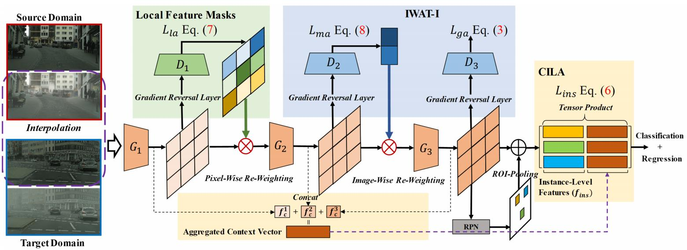
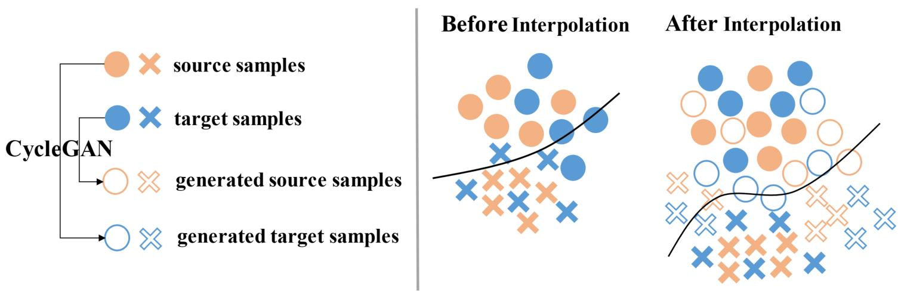
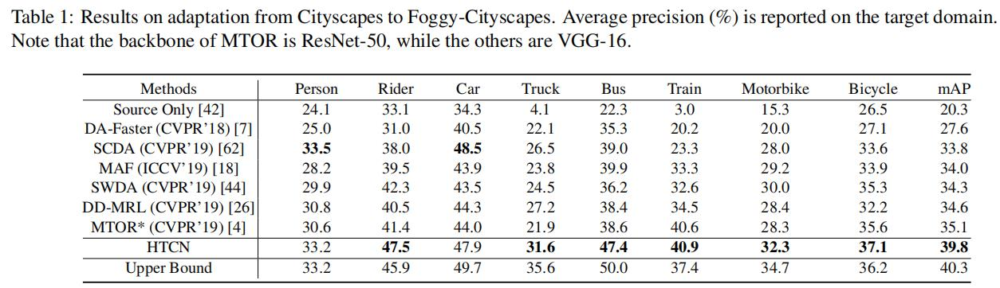

域适应目标检测——HTCN¶
综述¶
会议时间：IEEE Conference on Computer Vision and Pattern Recognition 2020 (CVPR 2020)
源码地址：https://github.com/chaoqichen/HTCN
针对领域：域适应目标检测
主要思想¶
目前大多数的域适应目标检测算法都利用对抗性的适应损失来使网络具有可转移性(transferability)，然而网络可转移性的产生是具有代价的，由于并不是所有的特征都具有相同的可转移性，因此对抗性的适应会潜在地损害目标域图像特征的可辨别性。由于图像中各种对象具有比较复杂的组合以及不同领域之间具有不同的场景布局，因此这种现象在跨域目标检测中更为严重。换句话说，通过对抗学习严格执行对齐两个领域之间整个特征分布容易导致负转移(negative domain)，因为不同层次（如局部、全局以及实例）的可转移性在目标检测器中没有得到明确的阐述（即网络并不知道图像哪里转移性高、哪里转移性低，因此本文主要的思想就是对特征图进行加权）。
注：本文中的转移性表示网络学到跨领域的不变性，即同一物体在不同领域环境下产生相同的特征，转移性越强，表示越容易跨域产生相同的特征；可辨别性表示检测器定位和区分不同对象实例的能力，即模型对图像物体的检测能力。
本文提出了一种新的分层可转移性校准网络(Hierarchical Transferability Calibration Network, HTCN)来为跨域目标检测器协调可转移性和可辨别性，通过分层校准具有可辨别性表征(特征表示)的可转移性，来规范对抗性适应。具体地来说，首先提出了一个具有输入插值的重要性加权对抗训练策略(Importance Weighted Adversarial Training with input Interpolation, IWAT-I)，该模块围绕一个思想，即并非所有样本都同等地具有可转移性，提出了对特征空间进行重新加权的策略，从而增强全局的可辨别性；其次，考虑到结构化的场景布局和检测任务的局部性质，作者还设计了一个具有上下文感知的实例级对齐模块(Context-aware Instance-Level Alignment, CILA)，通过捕捉实例级特征和全局上下文信息之间的互补效应来增强局部的可辨别性，不同于以前的工作（如SW Distribution Alignment，直接对上下文向量进行链接），作者利用张量积运算来进行更多的信息融合；最后，由于整个图像的一些局部地区更具有描述性以及占有主导地位，因此作者进一步提出了一种提高局部可辨别性的局部特征掩模方法(local feature mask)，通过计算两个领域之间基于浅层特征的局部掩模图来大致指导网络的语义一致性对齐，这可以被视为一个类似利用注意力模块来捕捉局部可转移区域的无监督方法。通过HTCN算法，网络可以有效地协调可转移性和可判别性之间的潜在矛盾，显著地扩展了以往基于对抗性的自适应检测方法。
方法¶
HTCN算法框架是基于Faster-RCNN目标检测框架而设计的，在原有的框架上主要增加了三个模块，即IWAT-I、CILA以及针对语义一致性的局部特征掩码。IWAT-I通过对特征空间进行重新加权来规范图像级对抗自适应，以校准全局特征的可转移性；CILA利用张量积运算规范实例级对抗自适应，以校准局部特征的可转移性，从而增强实例级特征和聚合上下文向量之间的信息交互，网络具体结构如下图所示：

问题重述
对于跨域目标检测，需要同时预测对象位置的边界框信息和对象类别。一般来说，对于N_s张有标签的源域数据表示为\mathcal D_s=\{(x^s_i,y^s_i,b^s_i)\}^{N_s}_{i=1} (y^s_i\in\mathcal R^{k=1},b^s_i\in\mathcal R^{k\times 4})，对于N_t张无标签的目标域数据表示为\mathcal D_t=\{x^t_j\}^{N_t}_{j=1}，本文的目标就是利用带有标签的\mathcal D_s和不带标签的\mathcal D_t训练一个域适应目标检测器，该检测器可以在目标领域上执行效果良好的目标检测任务。
如上文提到的，在使用对抗损失执行领域适应时，跨域检测任务中的可转移性和可辨别性可能会存在潜在的矛盾，因此本算法主要从如下两个方面解决该问题：①通过分层识别和匹配可转移的局部区域特征(局部特征掩码)、图像级特征(IWAT-I)以及基于ROI的实例级特征(CIAL)来校准模型可转移性；②通过基于层次可转移性的跨域对齐来从多个层次上提高模型特征的可辨别性。
对抗训练的重要性加权¶
虽然对抗性的域适应方法是一种典型并且有效地域对齐方法，但是由于目标检测任务中具有不同的场景布局、不同的对象组合方式(同一个场景可能出现不同类别的对象)，因此很难甚至不可能明确地鼓励模型具有跨域语义一致性，语义分割或者图像分类中使用纯域对齐的方法会潜在地恶化目标检测模型的语义一致性。
为了克服跨域检测中的负转移，作者提出的IWAT-I通过在两个领域之间生成插值样本来将源偏置(source biased)决策边界适用于目标数据，隐式地诱导对抗性训练收敛到一个更好的鞍点，并且显式的校准全局的可转移性以鼓励积极的转移。基于插值的对抗性训练效果如下图所示：

上图中圈和叉分别表示两类物体，由上图所示，在没有插值的情况下，通过对抗性训练学到的边界容易出现源偏置，即决策面容易偏向源域数据，从而降低模型辨别目标域数据的能力，如上图右侧第一个例子，决策边界将部分目标域中的圈类划分到了叉类领域。插值操作通过合成样本来填补决策边界的分布差距，从而提高模型对目标域数据的辨识能力，如第二个例子，通过填充合成的样本，可以让模型成功将叉类与圈类分开。
插值操作是利用CycleGAN算法(论文链接)实现的，即从对应的领域生成合成样本来填充域之间的分布间隙。（但这里的插值是什么？为什么和CycleGAN有关？问题记录）后面，根据插值数据空间的重要性来对特征进行重新加权，即在图像级别对特征进行加权，而重要性与跨域相似性相关联，例如如果样本特征在两个领域之间相似性越高，即分类器越不容易判断领域归属，则该样本的重要性就越大。由于并不是所有的图像在领域转移方面都是一样的，因此作者利用重要性来增加理想的图像样本的权重，从而校准图像级的可转移性。
具体的来说，作者利用域判别器相对于输入样本的不确定性来发现可转移样本，假设输入图像为x_i，判别器D_2的输出为d_i=D_2(G_1\circ G_2(x_i))，之后每个x_i的不确定性v_i可由域判别器输出的信息熵衡量：
上下文感知的实例级对齐¶
基于ROI-Pooling的实例级对齐可以在一定程度上减轻跨域的局部实例偏差，比如对象尺度、视角、外观等等，但如果仅对齐局部区域的话，会带来一个问题，即ROI区域特征向量都独立地表示局部对象，而不考虑整体上下文信息，而上下文特征是后续检测的信息性和决定性因素，并且是引导域之间精确局部实例对齐的先决条件。另一方面，由于深层特征最终沿着网络从领域不可知(domain-agnostic)过渡到领域特定(domain-specific)，因此从深层网络获得的实例级特征在域之间可能是不同的(具有辨识力)，相比之下，上下文向量是从较低层的特征聚合而来的，在域之间具有相对不变性(具有转移性)，因此，合理地融合这两组特征可以进一步让网络探索他们之间的互补性。
受此启发，作者提出了上下文感知实例级域对齐模块(CILA)，通过将上下文向量和实例级特征加以融合，来显式对齐模型在两个领域之间的实例级特征表示。一般地来说，将不同水平的上下文向量依次表示为f^1_c,f^2_c以及f^3_c，第i张图片的第j个实例区域特征表示为f^{(i,j)}_{ins}，为了简单起见，将实例级特征表示为f_{ins}。融合这些特征的最好方法就是将他们合并起来(例如：SW-Distribution Alignment)，即合并f_c^1,f_c^2,f_c^3与f_{ins}为[f_c^1,f_c^2,f_c^3,f_{ins}]。这种方法虽然简单，但是具有较强的局限性，即上下文特征和实例级特征相互间是独立的，忽略了潜在的互补效应。此外，由于上下文向量和实例级特征通常是不对称的，即长度通常不相等，因此一些常用的方法(如元素积、求均值等等)将不能用于这里的融合任务。
为了克服这一个问题，作者提出了一种非线性的融合策略：
最终的损失可以表示为（源域与目标域损失计算方法相同）：
针对语义一致性的局部特征掩码¶
虽然场景布局、对象组合(共现，co-occurrence)以及背景在领域之间可能是不同的，但是对于不同领域中相同对象的描述应该是语义不变的，并且同类对象之间可以进行匹配，例如在不同城市场景中的汽车应该有相似的草图(sketch)。因此，可以假设整张图像中的一些局部地区比其他地方更具有描述性和主导性，受此启发，作者提出在两个领域之间计算基于浅层特征的局部特征掩码，用于指导适应过程中的语义一致性，这里类似一个注意力机制，利用无监督方法去捕捉可转移的区域。
与IWAT-I模块类似，这里利用局部域分类器D_1得到的不确定性计算特征掩码m^s_f与m_f^t，其中D_1为像素点级别的域判断器，假设从G_1得到的特征图宽与高分别为W,H，则像素点级别的对抗性损失\mathcal L_{la}表示为：
训练损失¶
Faster R-CNN框架原本的检测损失表示为\mathcal L_{cls}和\mathcal L_{reg}，用于衡量对象分类损失和边界框回归损失，综合上面所有的模块，模型最终的优化目标可以表示为：
理论支撑¶
为了进一步证明方法的有效性，作者做了领域适应的理论解读。假设由于可转移性和可辨别性之间的潜在矛盾，通过无约束对抗训练的跨域检测可以被视为一个非保守(non-conservative)域适应问题，保守域适应是指学习者只需要找到关于标记源样本的最优假设，并且通过使用未标记目标域样本来评估该假设在目标域上的性能。
定义1：假设存在一个\mathcal H类的物体，给定两个不同的域\mathcal S,\mathcal T，在非保守域自适应中，有如下不等式：
上述定义表明，在非保守域自适应中，由于可转移性和可辨别性之间存在存在潜在的矛盾，最优源检测器和最优目标检测器之间存在一个最优间隙，即无法同时最小化两个领域上的预期风险。严格匹配两个领域之间整个特征分布会不可避免地得到次优解（即找到一个假设，同时最小化源域和目标域的期望误差）。因此，我们需要设计一个模型，促进具有可转移性的特征，提升这些积极特征的重要性，同时抑制不具有可转移性的特征，降低这些无关特征的重要性。从理论上讲，我们的工作不是在目标域中显式的寻找h^t（因为目标域数据缺少标签），而是解决非保守域自适应问题，并且最小化目标域的期望误差上限，即R_{\mathcal T}(h)。
域适应理论研究(论文链接)将目标域上的期望误差做了如下限制：
mAP对比¶
Cityscape \rightarrow FoggyCityscape

总结¶
本文为域适应目标检测领域提出了一种分级可转移校准网络(HTCN)，通过探索不同局部区域、图像和实例的可转移性来协调对抗性适应中可转移性和可辨别性之间的潜在矛盾。
注：以上内容仅是笔者的个人见解，若有错误，欢迎大家批评指正
未完待续，还有两个小细节需要询问作者，具体见问题记录——2022年2月12日6